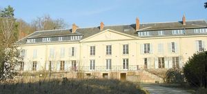
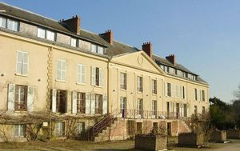
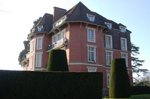
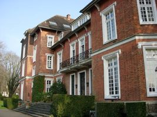
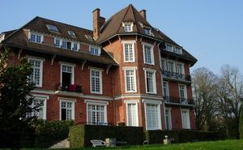
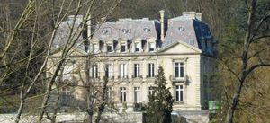
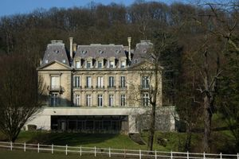

Jouy_en_Josas
| Département | 78 — Yvelines |
| Canton | Versailles |
| Commune | Jouy en josas |
| Type d'édifice | Château |
| Période d'origine | XVII |








Histoire
Trois châteaux dans cet article; Montcel, Montebello et Vilvert, MONTCEL, le domaine du Montcel est un ancien fief de Saint-Germain-des-Prés. En 1765, il appartenait à Pierre Chavanne et se composait d'une maison, bâtiments, cour, parterre, bois, prés, potager, allées canaux. Il fut acheté en 1795 par M. Oberkampf et agrandi à partir de 1805 pour Madame Oberkampf par les architectes Barthélémy Vignon et Thibault. Ils batirent l'aile gauche et le perron donnant à la maison l'allure de château. Entre 1807 et 1810, l'écossais Thomas Blaikie transforma le parc. Un Elysée familial fut installé dans une partie du domaine. Une maison dite le Chalet fut bâtie dans le troisième quart du XIXe siècle. Le domaine demeura dans la famille Mallet jusqu'en 1923, il fut acquis par messieurs Jeanrenaud qui y installa une école pour jeunes gens qui exista jusqu'en 1980. Pendant la seconde guerre mondiale un blockhaus a été construit et le château en grande partie incendié. De 1980 à 1993 le domaine fut loué à la fondation Cartier et les tombeaux de la famille Oberkampf furent déplacés dans le jardin de la "maison du pont de pierre", 1, rue du Montcel. Le bâtiment a été très agrandi par Oberkampf. A la suite de l'incendie de 1944, il a été presque entièrement reconstruit. Depuis 2000 le domaine a été acheté par une société qui le transforme en centre de conférence. Le site est classé depuis le 10 avril 1967.
Architecture
MONTEBELLO, en 1898 le comte de Cambacérès acquiert le domaine sur lequel il fait construire le chalet des Metz. Il épouse en 1909 une demoiselle de Montebello, d'ou le nom actuel de la demeure. En 1940, Madame de Cambacérès, comtesse de Motebello, vend le domaine à la Société Immobilière des Metz qui le lotit. Des modifications importantes ont été réalisées à ce moment là. Le château a été acquis en 1974 par la ville et a abrité quelques temps le musée de la toile de Jouy, transféré au château de l'Eglantine. Le bâtiment est articulé autour d'un corps de logis central élevé de deux étages carrés. Les deux ailes sont dissymétriques celle de droite par rapport à la façade d'entrée n'a qu'un étage carré. Plusieurs modifications ont été apportées aux toitures (élévation de celle du corps de bâtiment), aux lucarnes (remplacées par des chiens-assis) et au balcon (garde corps en bois découpé et loggia remplacés par de la ferronnerie). Le toit en ardoise à l'origine est actuellement en tuile plate. VILVERT Château de style classique construit sur l'emplacement du précédent par le baron Cabrol de Mouté, époux de Louise Mallet, petite fille d'Oberkampf, et maire de Jouy de 1868 à 1879. Le corps central à élévation à travées sur deux étages est couvert d'un toit percé de lucarnes ornées de frontons semi-circulaires. Il est flanqué de deux pavillons surmontés d'un fronton triangulaire. Le château servit d'ambulance pendant la guerre de 1870 et pendant la Seconde Guerre mondiale afin de recevoir des blessés de la division Leclerc. Le domaine de Vilvert comprenait autrefois deux fermes et un moulin. Propriété du ministère de l'Agriculture qui y a installé l'INRA.
Habitants / Familles
Montcel, Pierre Chavanne Montebello ; Comte de Cambacérès Vilvert; baron Cabrol de Mouté"
Divers
Trois châteaux dans cet article; Montcel grav -1-2-3, Montebello grav 4-5-6 et Vilvert grav-7-8,